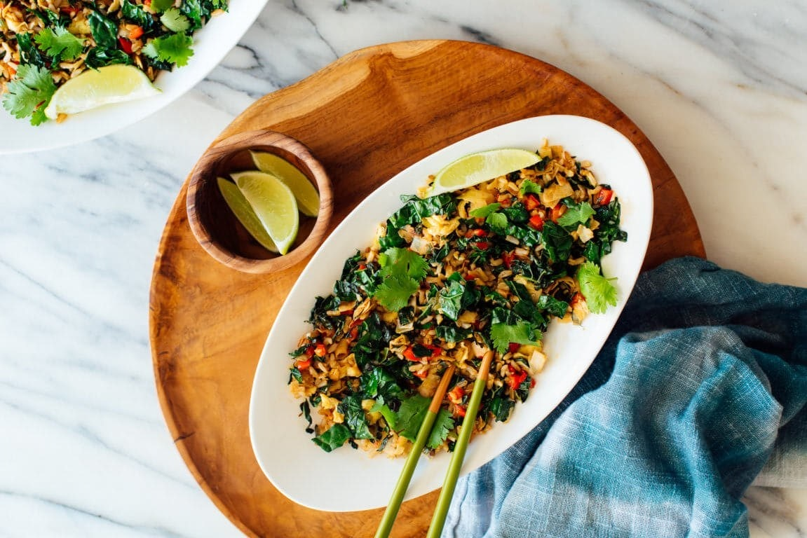

Spicy Kale and Coconut Fried Rice
Ingredients:
- 2 tablespoons coconut oil or quality high-heat oil such as avocado oil, divided
- 2 eggs, whisked together with a dash of salt
- 2 big cloves garlic, pressed or minced
- ¾ cup chopped green onions (about 1 bunch)
- 1 medium bunch kale (preferably Lacinato but curly green is good, too), ribs removed and leaves chopped
- ¼ teaspoon fine sea salt
- ¾ cup large, unsweetened coconut flakes
- 2 cups cooked and chilled brown rice
- 2 teaspoons reduced-sodium tamari or soy sauce
- 2 teaspoons chili garlic sauce or sriracha
- 1 lime, halved
- Handful fresh cilantro, for garnish
Instructions:
- Heat a large (12-inch or wider) wok, cast iron skillet or
non-stick frying pan over medium-high heat. Once the pan is hot
enough that a drop of water sizzles on contact, add 1 teaspoon oil
and swirl the pan to coat the bottom. Pour in the eggs and cook,
stirring frequently, until the eggs are scrambled and lightly set.
Transfer the eggs to your empty bowl. Wipe out the pan if necessary
with a paper towel (be careful, it’s hot!).
- Add 1 tablespoon oil to the pan and add the garlic, green onions
and optional additional vegetables. Cook until fragrant or until the
vegetables are tender, stirring frequently, for 30 seconds or
longer. Add the kale and salt. Continue to cook until the kale is
wilted and tender, stirring frequently, about 1 to 2 minutes.
Transfer the contents of the pan to your bowl of eggs.
- Add the remaining 2 teaspoons oil to the pan. Pour in the coconut
flakes and cook, stirring frequently, until the flakes are lightly
golden, about 30 seconds. Add the rice to the pan and cook, stirring
occasionally, until the rice is hot, about 3 minutes.
- Pour the contents of the bowl back into the pan, breaking up the
scrambled egg with your spatula or spoon. Once warmed, remove the
pan from the heat.
- Add the tamari, chili garlic sauce and juice of ½ lime. Stir to
combine. Taste, and if it’s not fantastic yet, add another teaspoon
of tamari or a pinch of salt, as needed.
- Slice the remaining ½ lime into wedges, then divide the fried
rice into individual bowls. Garnish with wedges of lime and a
sprinkling of torn cilantro leaves, with jars of tamari, chili
garlic sauce and/or red pepper flakes on the side, for those who
might want more.
